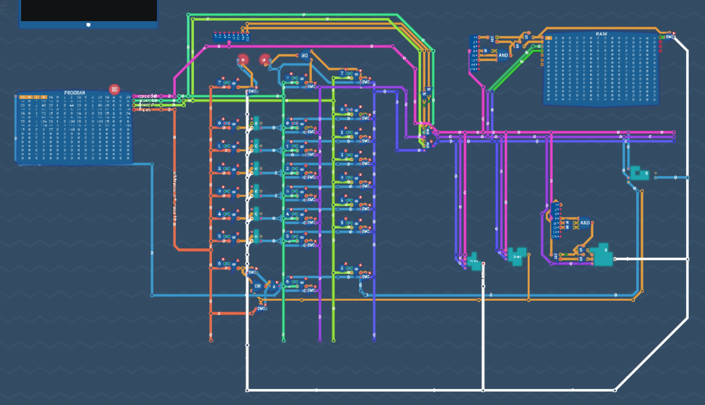

TD4-CPU: 从元件手搓CPU

从图灵完备开始
我在高中就接触到一款名为《图灵完备》的逻辑电路搭建游戏，从此对计算机硬件架构的兴趣一发不可收拾。我在课余时间自学数字逻辑电路、潜心研究CPU结构。

支部事业
进入清华，我多方联系资金与场地，组织了“大一造机——手焊CPU”系列支部事业，在icenter的焊接实验室举办多次活动，基于一个名为"TD4-CPU"的开源项目，带领同学运用离散数学中的逻辑知识分析CPU电路图，指导同学焊接技术，最终让所有参与者都能从芯片与电路板开始，亲手制作出自己的4位CPU。

该CPU支持通过拨码开关进行机器语言编程，可执行一套简练而图灵完备的指令集。
测试程序：
1 | 01110000 初始化B寄存器为0 |
效果就是LED从0开始循环到15然后进位溢出再变为0
推文
关注计43班喵！谢谢喵！
参考书目：《CPUの創りかた》
参考链接：TD4 CPU详细教程
大二造机：Vivado & RiscV

始终让所学知识在动手实践中焕发光彩，是我一贯的追求。大一手焊CPU后，我在大二（上）提前修读了《计算机组成原理》，与队友合作完成了RV32五级流水线CPU的大作业，“奋战三星期，造台计算机”，取得了不错的成绩。
- 性能支持：icache指令缓存、dcache数据缓存、BTB分支目标预测、TLB页表映射缓存
- 功能支持：支持M态与U态的权限级和中断异常、RV32双层页表、Flash读取、USB串口读写
Vivado生成的电路图
在学以致用的过程中，我逐渐将各个课程的知识融会贯通，建立了对计算机体系自下而上的系统认知，为后续深入参与体系结构乃至底层优化、GPU编程等奠定了坚实的实践基础。